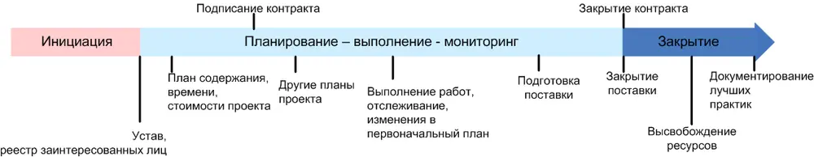

Глава V. Приступаем к планированию Входы:
- устав проекта
Для чего нужны планы?
Устав подписан. «Хвост удава» миновал. Следующий наш шаг – планирование. Ему в проектном управлении отводится особое место. Одна из парадигм гласит – «если это нельзя спланировать, это нельзя и сделать».
Для чего нам нужны планы:
1. Чтобы не забыть что-то существенное во время выполнения проекта
2.Чтобы любой член команды сам, не «дергая» менеджера, в любой момент времени
ПОНИМАЛ, «что ему делать сейчас»
3.Чтобы общаться.
Для чего планы не нужны:
- Для наказания
- Как самоцель.
Необходимо осознать что планы - это средство коммуникации.
Значимость коммуникаций неизмерима, а сбой – всегда бедствие.
Идет ли речь об уточнении членом команды «за какую работу ему браться дальше», или о вынужденном его бездействии (а я думал, что раз интерфейс доделали, то теперь только в четверг продолжим, вот и занялся своими делами»). Или на втором месяце проекта вдруг проявилось недовольство заказчика, который еще не видел ни одного результата по проекту и предлагает завтра показать ему прототип. Все это недостатки планирования. Ваши планы либо не существуют, либо их не читают, либо не воспринимают всерьез.
Уделяйте планированию очень пристальное внимание. Позаботьтесь, чтобы план был достоверным (иначе им перестанут пользоваться), доступным (для тех, кому он нужен), разумно-подробным (многословный план также бесполезен, как и чересчур поверхностный).
Как писать правильные планы?
Создавая планы – важно правильно к ним относится.
План – это не «клятва», а «прогноз». Во многих сферах (в том числе и в сфере информационных технологий) невозможно совершенно точно прогнозировать продолжительность, а порой и состав работ. Может показаться, что это дискредитирует идею планирования, однако это не так. Помните – что нельзя спланировать, нельзя и сделать.
Планируйте с «диапазоном». Не выдавайте (и не требуйте) точную оценку там, где ее дать нельзя. Донесите до всех членов команды и экспертов, которые помогают вам планировать проект, что вы не
Селиховкин Иван (www.pmlead.ru) 19
просите с них клятву «уложиться к определенной дате», вам нужна реалистичная оценка и возможные отклонения от нее. Однако настаивайте на реалистичности оценок. Говоря об инициации проекта, мы отмечали, что приемлемой является «грубая» оценка (с диапазоном колебания до +/-50%). В ходе планирования такая точность нас не устраивает. В зависимости от того как глубоко мы продвинулись – приемлемым диапазоном может быть +25/-10% или +/-10% и так далее.
Опасайтесь раздувания оценок (padding). Член команды, эксперт или вы сами, поставленный в жесткие условия («выдать реалистичные оценки») испытывает соблазн завысить свои прогнозы, чтобы подстраховаться. Чтобы противостоять padding, особенно общаясь с техническими экспертами, многократно превосходящими вас в своих инженерных компетенции – нужен очень серьезных навык общения и знание психологии людей. К счастью – этот навык тренируем. Начните вырабатывать его уже на первом проекте.
Планы будут изменяться. На это необходимо ориентироваться сразу. В отличие от устава, единожды созданного и практически не подверженного изменениям, планы проекта – документы весьма «живые». По ходу выполнения работ, мы будем узнавать и выявлять новые нюансы, детали, столкнемся с форс-мажорами. Чтобы наши планы оставались достоверными –придется их корректировать. Это нормально, главное, чтобы процесс корректировки был тоже заранее согласован, и в обход него никто (вообще никто) не мог бы вносить изменения в планы.
«План управления проектом»
Введем новый термин
План управления проектом – это совокупность всех проектных планов.
Вдумайтесь в определение. Осознайте, что план управления проектом – это не бумажка с перечнем шагов «нужно сделать», это общее название ВСЕХ планов проекта, каждый из которых «живет» и модифицируется по мере выполнения работ.
Очевидно, что некоторые элементы плана проекта могут быть подписаны спонсором, другие – достаточно формально согласовать с командой. Какие-то элементы плана будут доступны всем заинтересованным лицам, другие – избранным, определенные разделыудобнее вести в свободном формате, для других лучше подойдет специализированное ПО.
Определимся с составом плана управления проектом.
Помните «области знаний» (из главы III)? Над каждой из них нам придется поразмыслить и описать в составе собственного элемента плана с разумной подробностью. Кроме того, потребуется дополнительно описать общие правила реализации проекта (сюда относятся, например, правила управления конфигурациями).
Возможный состав плана управления проектом:
План управления содержанием
План управления временем
План управления стоимостью
План управления рисками
Селиховкин Иван (www.pmlead.ru) 20
План управления качеством
План управления закупками
План управления коммуникациями
План управления сотрудниками
План управления конфигурациями
Описание общих принципов «как мы будем планировать»
Корректировка «плана управления проектом» - осуществляется в течение всего проекта, в ответ на изменившиеся внешние условия, реализовавшиеся риски и т.д. Предсказать, где и когда понадобятся изменения заранее невозможно, посему их не планируют заранее, а осуществляют при помощи механизма «контроля изменений» (подробнее о нем мы будем говорить в главе XIII).
А вот процесс первоначальной разработки плана может быть точно регламентирован и предполагает четкую последовательность шагов. Один из вариантов «лучшей практики» приведен ниже.
Селиховкин Иван (www.pmlead.ru) 21
| Возможный алгоритм планирования: Определить, как будет строиться планирование | ||
| Собрать и финализировать требования | ||
| Сформировать концепцию (scope) | ||
| Принять решение «что закупаем»? | ||
| Определить команду | ||
| Создать ИСР (иерархическую структуру работ) (WBS) | ||
| Создать перечень действий (activity list) | ||
| Создать сетевую диаграмму (network diagram) | ||
| Оценить требуемые ресурсы | ||
| Оценить продолжительность действий и стоимость | ||
| Сформировать расписание | ||
| Создать бюджет | ||
| Планировать качество – создать метрики | ||
| Создать план улучшения процессов | ||
| Распределить роли и ответственности | ||
| Создать план коммуникаций | ||
| Спланировать управление рисками, идентифицировать риски, качественный анализ, | ||
| количественный анализ, планировать реагирование на риски | ||
| Все повторить |
Некоторые из шагов отнимут достаточно много времени (такие, как планирование содержания, оценка времени и стоимости, создание расписания и бюджета), другие, возможно, удастся «проскочить» за несколько минут.
Селиховкин Иван (www.pmlead.ru) 22
Разумеется, приведенный сценарий не является догмой, но критичное осмысление каждого шага убережет вас от серьезных пробелов в планировании. В следующих главах мы последовательно разберем каждый из них.
Определите, устраивает ли вас приведенный выше сценарий (или просто решите опробовать его в своем проекте). Будем считать, что на этом первый шаг «определить, как будет строиться планирование» - завершен, остальные мы подробно разберем в следующих главах.
«План управления проектом» и контракт
Многие элементы «планов» уже прорабатывались во время инициации и были включены в устав. Тут нет противоречия. В фазу инициации мы создавали грубые (ROM), высокоуровневые оценки. Они годились для предварительных договоренностей со спонсором, но совершенно не подходят для коммуникаций с командой и контроля выполнения работ.
В ходе планирования мы последовательно уточняем первичные оценки, корректируем их. При этом, для ПМ существенным моментом является соотношение проектной документации и договорной.
Каждая организация по-своему строит свою работу по заключению договоров и контрактов.. Как правило, наблюдается некий компромисс между необходимостью «подстраховаться» (уточняя планы) и «не работать бесплатно» (ведь пока контракт не подписан, всю вашу деятельность по инициации и планированию проекта оплачивает ваш высший менеджмент).
Один из наиболее приемлемых вариантов изображен на схеме ниже. Он предполагает, что подписанию контракта предшествует вся работа в части инициации, а также дополнительное планирование проектных ограничений (время, стоимость, содержание). В этом случае до заключения контракта у ПМ и спонсора есть возможность подстраховаться от грубых ошибок в основных положениях контракта (исправить которые потом будет даже сложнее, чем положения устава).

Обратите внимание, что согласно рисунку - закрытие контракта также не означает автоматически завершение проектной деятельности.
На практике, заключение контракта может даже предшествовать большей части фазы инициации. Как правило, на таких проектах очень тяжело работать с ограничениями.
Выходы:
- определен состав «плана управления проектом»
Селиховкин Иван (www.pmlead.ru) 23